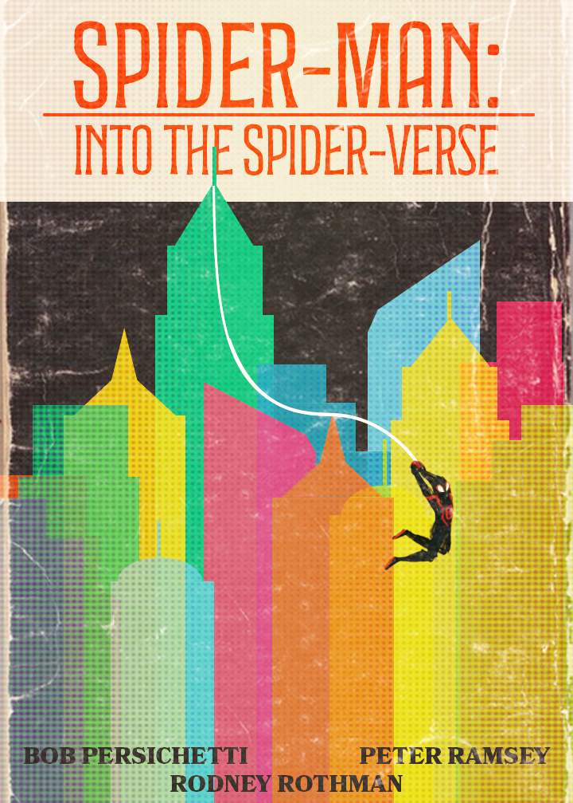
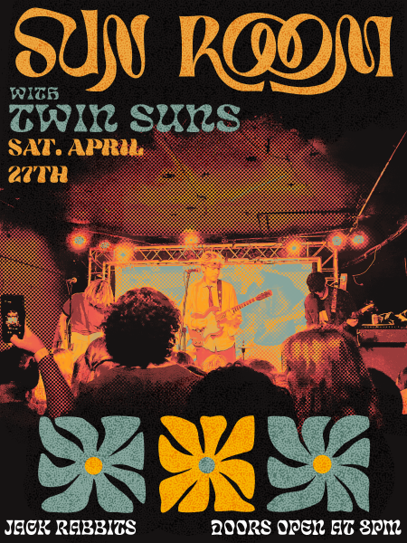
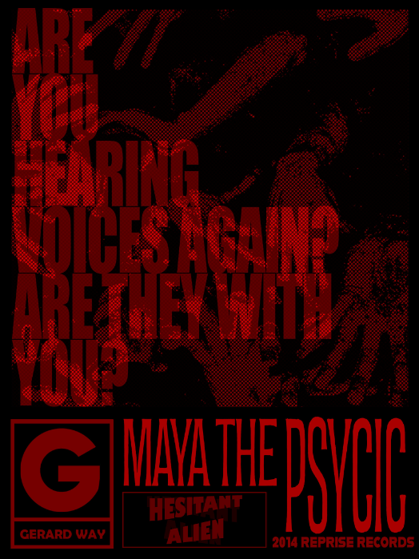
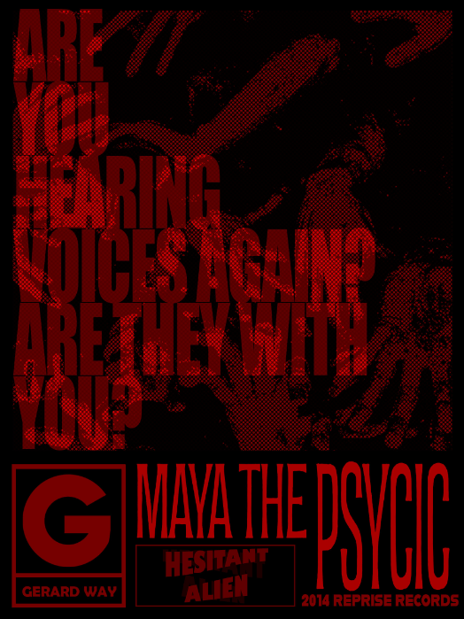

A LOT OF MY PERSONAL PROJECTS ARE MORE GRAPHIC DESIGN FOCUSED AND TAKE INSPIRATION FROM MUSIC OR ART PIECES I LIKE.
A PROJECT I UNDERTOOK WAS TAKING CLASSIC ART PIECES AND IMAGINING THEM IN A DIFFERENT CONTEXT BY INFUSING THEM WITH MODERN BACKGROUNDS, CREATING A VIBRANT JUXTAPOSITION OF OLD AND NEW. I ALSO ENJOY WORKING WITH TYPOGRAPHY AND LAYERING EFFECTS TO GET AN OLD PRINT AESTHETIC. AS SEEN IN MY WORKS WHERE I CONVERT SONGS I LIKE INTO BOOK COVERS OR POSTER DESIGNS.
**BECAUSE THESE ARE ALL UNOFFICIAL SOME OF THE GRAPHICS USED ARE NOT MY OWN.**
*
 *
 
 *